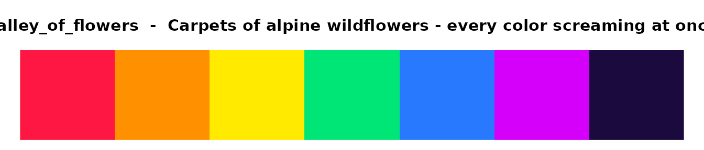
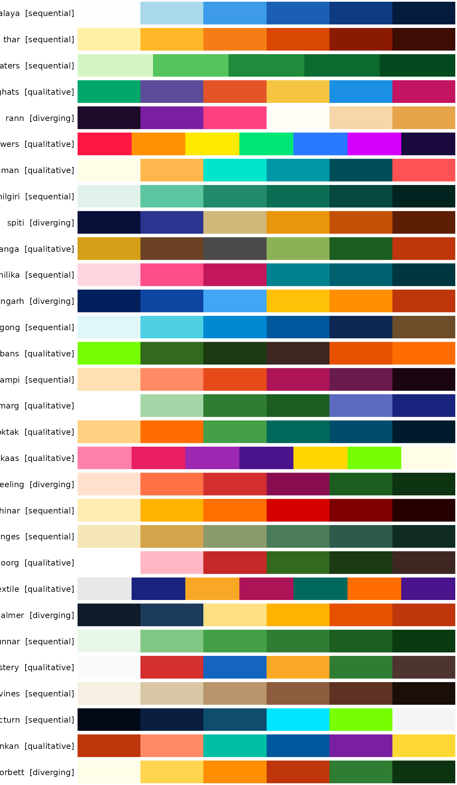
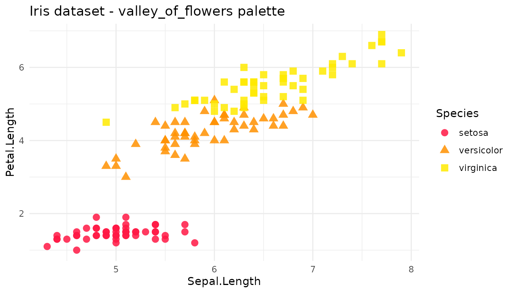
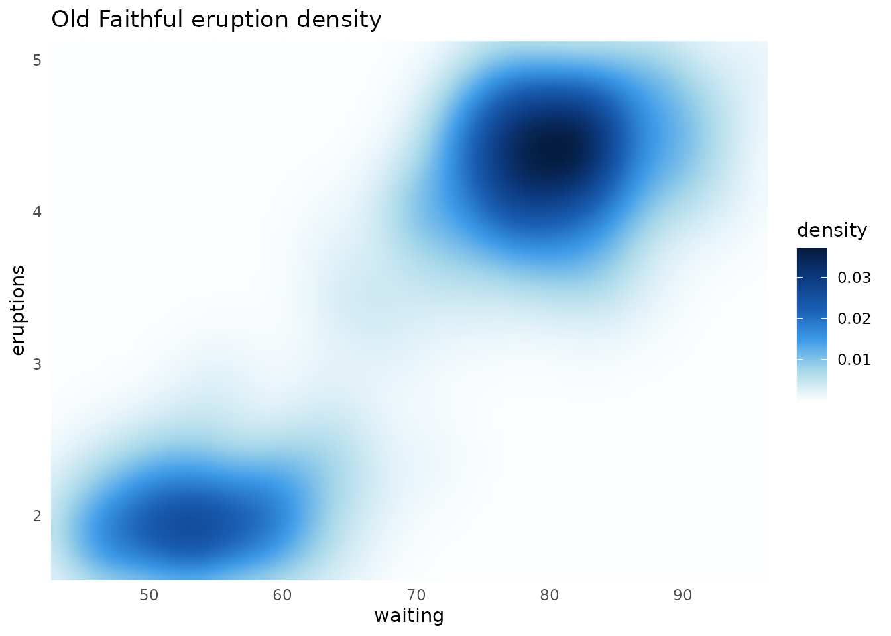
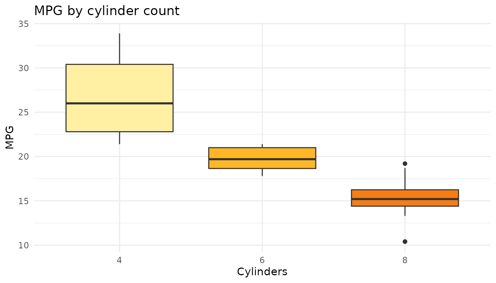

What is prakriti?
prakriti (Sanskrit for nature) gives you 30
color palettes pulled from Indian landscapes. Each one is built for a
specific job - sequential for ordered data, diverging for data with a
midpoint, qualitative for categories - and they all plug straight into
ggplot2.
Finding your way around
prakriti_names() lists every palette.
prakriti_info() gives you the full picture - name, type,
number of colors, and what landscape inspired it.
prakriti_names()
#> [1] "himalaya" "thar" "backwaters"
#> [4] "western_ghats" "rann" "valley_of_flowers"
#> [7] "andaman" "nilgiri" "spiti"
#> [10] "kaziranga" "chilika" "mehrangarh"
#> [13] "pangong" "sundarbans" "hampi"
#> [16] "gulmarg" "loktak" "kaas"
#> [19] "darjeeling" "chinar" "ganges"
#> [22] "coorg" "kutch_textile" "jaisalmer"
#> [25] "munnar" "ladakh_monastery" "chambal_ravines"
#> [28] "nocturn" "konkan" "corbett"
prakriti_info()
#> name type n
#> 1 himalaya sequential 6
#> 2 thar sequential 6
#> 3 backwaters sequential 5
#> 4 western_ghats qualitative 6
#> 5 rann diverging 6
#> 6 valley_of_flowers qualitative 7
#> 7 andaman qualitative 6
#> 8 nilgiri sequential 6
#> 9 spiti diverging 6
#> 10 kaziranga qualitative 6
#> 11 chilika sequential 6
#> 12 mehrangarh diverging 6
#> 13 pangong sequential 6
#> 14 sundarbans qualitative 6
#> 15 hampi sequential 6
#> 16 gulmarg qualitative 6
#> 17 loktak qualitative 6
#> 18 kaas qualitative 7
#> 19 darjeeling diverging 6
#> 20 chinar sequential 6
#> 21 ganges sequential 6
#> 22 coorg qualitative 6
#> 23 kutch_textile qualitative 7
#> 24 jaisalmer diverging 6
#> 25 munnar sequential 6
#> 26 ladakh_monastery qualitative 6
#> 27 chambal_ravines sequential 6
#> 28 nocturn sequential 6
#> 29 konkan qualitative 6
#> 30 corbett diverging 6
#> inspiration
#> 1 Blinding snow, glacial turquoise, bottomless Himalayan sky
#> 2 Blazing Rajasthan dunes, saffron sunset, scorched earth
#> 3 Luminous Kerala palms reflected in emerald water
#> 4 Monsoon: orchids, laterite, kingfishers, butterflies
#> 5 Infinite white salt flats, flamingo shock-pink, violet dusk
#> 6 Carpets of alpine wildflowers - every color screaming at once
#> 7 Electric turquoise shallows, fire coral, bleached sand
#> 8 Blue-green mountains disappearing into monsoon mist
#> 9 Stark indigo night sky crashing into sun-scorched ochre cliffs
#> 10 Golden elephant grass, rhino armor, river mud, tiger flash
#> 11 Flamingo clouds over pewter lagoon at first light
#> 12 Jodhpur's electric blue houses blazing under golden hour
#> 13 Pangong Tso shifting from turquoise to ultramarine to ink
#> 14 Neon mangrove canopy, dark tidal roots, tiger-flame ambush
#> 15 Rose-gold boulders catching sunset fire, fading to magenta night
#> 16 Blinding snow, vivid meadow, deodar silhouettes against indigo dusk
#> 17 Amber dawn, floating green phumdis on deep teal water
#> 18 Explosive wildflower carpets - hot pink, violet, acid green, gold
#> 19 Kanchenjunga on fire at sunrise, plunging into deep tea-estate green
#> 20 Kashmir's chinar ablaze - gold to vermilion to smoldering embers
#> 21 Sacred river at dawn - silt gold, monsoon green, deep current
#> 22 Coffee blossoms, red laterite, rain-soaked plantation green
#> 23 Rann at festival - mirrorwork silver, indigo, turmeric, madder
#> 24 Sandstone fort glowing at noon, cooling into blue twilight
#> 25 Rolling tea carpets from bright flush to deep shade
#> 26 Whitewashed walls, prayer-flag primaries against barren rock
#> 27 Eroded badlands - bone white, khaki, terracotta, deep shadow
#> 28 Bioluminescent shores of Havelock - ink sky to starlight
#> 29 Laterite cliffs, coconut spray, Arabian Sea teal, monsoon violet
#> 30 Sal forest dawn - gold mist, tiger-stripe amber, deep canopyFilter by type if you know what kind of data you’re working with:
info <- prakriti_info()
info[info$type == "diverging", ]
#> name type n
#> 5 rann diverging 6
#> 9 spiti diverging 6
#> 12 mehrangarh diverging 6
#> 19 darjeeling diverging 6
#> 24 jaisalmer diverging 6
#> 30 corbett diverging 6
#> inspiration
#> 5 Infinite white salt flats, flamingo shock-pink, violet dusk
#> 9 Stark indigo night sky crashing into sun-scorched ochre cliffs
#> 12 Jodhpur's electric blue houses blazing under golden hour
#> 19 Kanchenjunga on fire at sunrise, plunging into deep tea-estate green
#> 24 Sandstone fort glowing at noon, cooling into blue twilight
#> 30 Sal forest dawn - gold mist, tiger-stripe amber, deep canopyPulling colors
prakriti_palette() returns a character vector of hex
codes. By default you get the full palette. Pass n to grab
a subset.
prakriti_palette("thar")
#> [1] "#FFF0A3" "#FFB727" "#F57D15" "#D94701" "#8B1A04" "#3D0C02"
#> attr(,"name")
#> [1] "thar"
#> attr(,"type")
#> [1] "sequential"
prakriti_palette("himalaya", n = 3)
#> [1] "#FCFEFF" "#A8D8EA" "#3D9BE9"
#> attr(,"name")
#> [1] "himalaya"
#> attr(,"type")
#> [1] "sequential"Reverse any palette with direction = -1:
prakriti_palette("chinar", direction = -1)
#> [1] "#260000" "#7F0000" "#D50000" "#FF6F00" "#FFB300" "#FFECB3"
#> attr(,"name")
#> [1] "chinar"
#> attr(,"type")
#> [1] "sequential"Need more colors than the palette has? Interpolate smoothly:
prakriti_palette("nilgiri", n = 15, type = "continuous")
#> [1] "#E0F2E9" "#B0E2CE" "#81D2B4" "#57C19C" "#43AC89" "#2E9776" "#1E8667"
#> [8] "#167C5F" "#0E7257" "#09654F" "#085748" "#064941" "#043D36" "#03302B"
#> [15] "#022420"
#> attr(,"name")
#> [1] "nilgiri"
#> attr(,"type")
#> [1] "sequential"Viewing palettes
Single palette:
display_prakriti("valley_of_flowers")
The whole collection (make your plot pane tall):

Using with ggplot2
Qualitative palettes default to discrete scales. Sequential and
diverging default to continuous. You can override with
discrete = TRUE or FALSE.
ggplot(iris, aes(Sepal.Length, Petal.Length,
color = Species, shape = Species)) +
geom_point(size = 3, alpha = 0.85) +
scale_color_prakriti("valley_of_flowers") +
labs(title = "Iris measurements",
x = "Sepal length (cm)", y = "Petal length (cm)") +
theme_minimal()
ggplot(faithfuld, aes(waiting, eruptions, fill = density)) +
geom_raster(interpolate = TRUE) +
scale_fill_prakriti("himalaya") +
coord_cartesian(expand = FALSE) +
labs(title = "Old Faithful eruption density") +
theme_minimal()
ggplot(mtcars, aes(factor(cyl), mpg, fill = factor(cyl))) +
geom_boxplot() +
scale_fill_prakriti("thar", discrete = TRUE) +
labs(title = "MPG by cylinder count", x = "Cylinders", y = "MPG") +
theme_minimal() +
theme(legend.position = "none")
What’s next
- Palette gallery - all 30 palettes as swatches, continuous ramps, and a full metadata table
- Sequential & diverging recipes - heatmaps, contours, correlation tiles, calendar charts, temperature anomaly maps
- Qualitative recipes - scatter plots, stacked areas, grouped bars, donut charts, ridgelines, dark-mode density plots